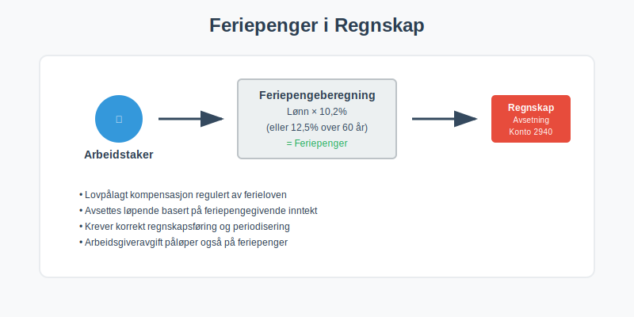
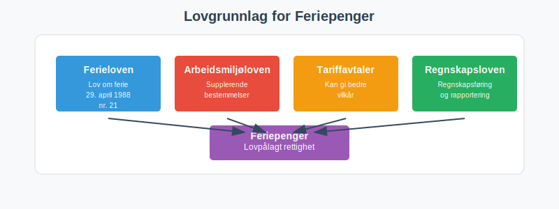
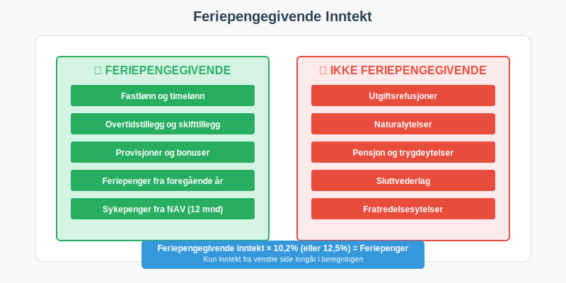
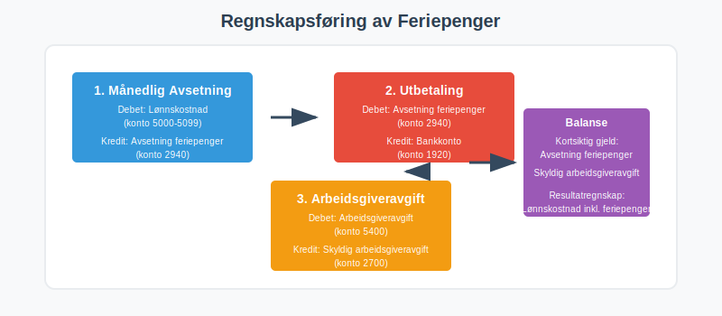
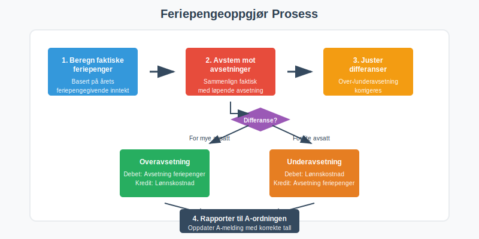
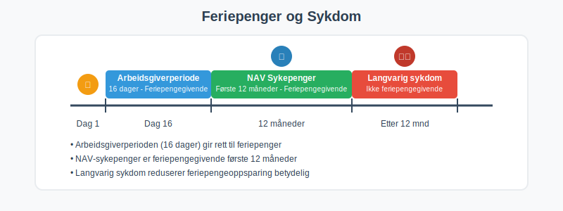
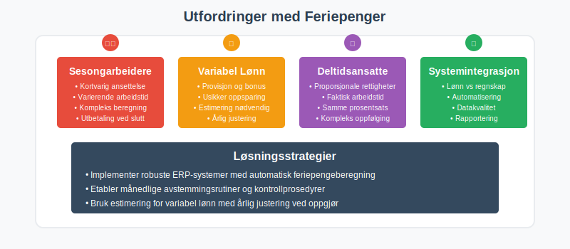
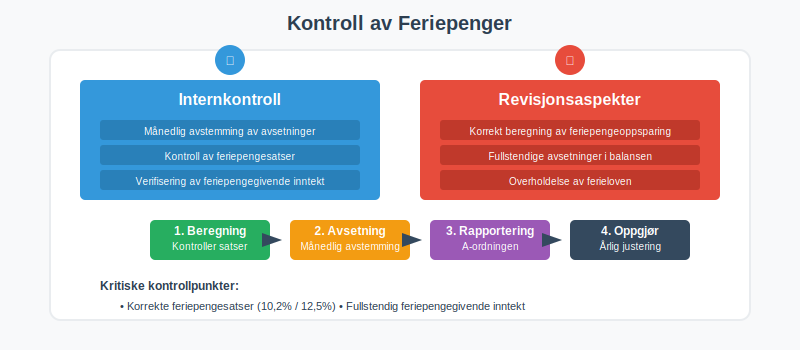
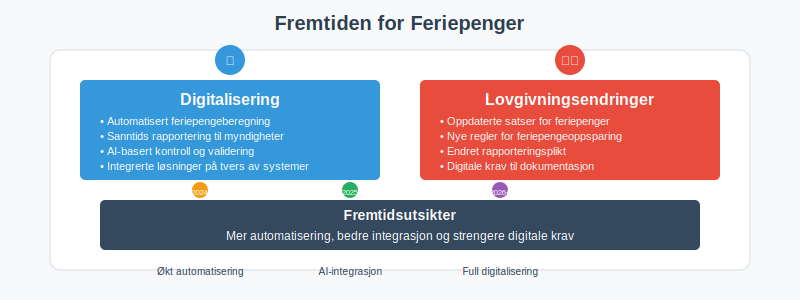

Feriepenger er lovpålagt kompensasjon til arbeidstakere for tapt arbeidsfortjeneste under ferie, regulert av Ferieloven. For bedrifter er korrekt regnskapsføring av feriepenger essensielt både for å overholde norsk arbeidsrett og for å sikre nøyaktig regnskapsføring av lønnskostnader og avsetninger.

Hva er Feriepenger?
Feriepenger er økonomisk kompensasjon som arbeidstakere har rett til under ferie, og består av:
- Feriepengeoppsparing basert på opptjent lønn (inkludert grunnlønn og tillegg)
- Kompensasjon for tapt arbeidsfortjeneste
- Lovpålagt ytelse regulert av ferieloven
- Regnskapsmessig forpliktelse for arbeidsgivere
Lovgrunnlag for Feriepenger
Feriepenger er regulert av:
- Ferieloven (lov om ferie av 29. april 1988 nr. 21)
- Regler om obligatorisk fellesferie: Se Fellesferie for regler om kollektiv ferieavvikling
- Arbeidsmiljøloven for supplerende bestemmelser
- Tariffavtaler som kan gi bedre vilkår
- Regnskapsloven for regnskapsføring

Beregning av Feriepenger
Feriepenger beregnes som en prosentandel av feriepengegivende inntekt fra foregående kalenderår.
For en mer detaljert gjennomgang av satser og prosentsatser for feriepenger, se vår artikkel om Feriepenger i prosent.
Standard Feriepengesatser
| Arbeidstaker | Feriepengesats | Grunnlag |
|---|---|---|
| Arbeidstakere under 60 år | 10,2% | Feriepengegivende inntekt |
| Arbeidstakere over 60 år | 12,5% | Feriepengegivende inntekt |
| Særlige grupper | Varierer | Tariffavtaler |
| Langvarige ansatte | Kan øke | Basert på ansiennitet |
Se også vår artikkel om Feriepengegrunnlag for en grundig gjennomgang av hva som inngår i beregningsgrunnlaget.
Feriepengegivende Inntekt
Feriepengegivende inntekt inkluderer:
- Fastlønn og timelønn
- Overtidstillegg og skifttillegg
- Helligdagslønn og tilleggsgodtgjørelse for arbeid på helligdager
- Provisjoner og bonuser
- Feriepenger fra foregående år
- Sykepenger fra NAV gjennom folketrygden (første 12 måneder)
Ikke feriepengegivende:
- Utgiftsrefusjoner og naturalytelser
- Pensjon og trygdeytelser
- Sluttvederlag og fratredelsesytelser

Praktisk Beregningseksempel
Eksempel: En arbeidstaker under 60 år hadde følgende inntekt i 2023:
| Inntektstype | Beløp | Feriepengegivende |
|---|---|---|
| Fastlønn | 450.000 kr | ✓ |
| Overtidstillegg | 25.000 kr | ✓ |
| Bilgodtgjørelse | 15.000 kr | ✗ |
| Bonus | 30.000 kr | ✓ |
| Total feriepengegivende | 505.000 kr |
Beregning:
- Feriepenger 2024 = 505.000 × 10,2% = 51.510 kr
Regnskapsføring av Feriepenger
Korrekt regnskapsføring av feriepenger krever forståelse av periodisering og avsetninger.

Løpende Avsetning (Månedlig)
Feriepenger avsettes løpende basert på månedlig lønnsutbetaling:
Regnskapsføring hver måned:
Debet: Lønnskostnad (konto 5000-5099)
Kredit: Avsetning feriepenger (konto 2940)
Beregning av månedlig avsetning:
- Månedlig lønn × feriepengesats (10,2% eller 12,5%)
Utbetaling av Feriepenger
Ved utbetaling av feriepenger:
Debet: Avsetning feriepenger (konto 2940)
Kredit: Bankkonto (konto 1920)
Arbeidsgiveravgift på Feriepenger
Arbeidsgiveravgift påløper også på feriepenger:
| Sone | Arbeidsgiveravgift |
|---|---|
| Sone I | 14,1% |
| Sone II | 10,6% |
| Sone III | 6,4% |
| Sone IV | 5,1% |
| Sone V | 0% |
Regnskapsføring av arbeidsgiveravgift:
Debet: Arbeidsgiveravgift (konto 5400)
Kredit: Skyldig arbeidsgiveravgift (konto 2700)
Feriepengeoppgjør og Avstemming
Årlig Feriepengeoppgjør
Ved årsskiftet må bedriften:
- Beregne faktiske feriepenger basert på årets inntekt
- Avstemme mot løpende avsetninger
- Justere eventuelle differanser
- Rapportere til A-ordningen

Avstemming av Feriepengegjeld
Kontroll av feriepengegjeld:
| Element | Beskrivelse |
|---|---|
| Inngående balanse | Feriepengegjeld 1. januar |
| + Årets avsetning | Løpende avsetninger |
| - Utbetalte feriepenger | Faktiske utbetalinger |
| = Utgående balanse | Feriepengegjeld 31. desember |
Justering av Avsetninger
Ved over-/underavsetning:
Overavsetning (for mye avsatt):
Debet: Avsetning feriepenger (konto 2940)
Kredit: Lønnskostnad (konto 5000)
Underavsetning (for lite avsatt):
Debet: Lønnskostnad (konto 5000)
Kredit: Avsetning feriepenger (konto 2940)
Særlige Forhold ved Feriepenger
Feriepenger ved Oppsigelse
Ved oppsigelse eller fratredelse:
- Opptjente feriepenger utbetales ved fratredelse
- Feriepengeoppgjør må gjøres umiddelbart
- Skattepliktig som vanlig lønn med forskuddstrekk og skatt på feriepenger
- A-melding må oppdateres
Feriepenger og Sykdom
Sykepenger påvirker feriepengeoppsparing:
- NAV-sykepenger er feriepengegivende første 12 måneder
- Arbeidsgiverperioden (16 dager) er feriepengegivende
- Langvarig sykdom reduserer feriepengeoppsparing

Feriepenger for Deltidsansatte
Deltidsansatte har samme rett til feriepenger:
- Samme prosentsats som heltidsansatte
- Beregning basert på faktisk arbeidstid
- Proporsjonale avsetninger
Praktiske Utfordringer
Sesongarbeidere
Sesongarbeidere krever spesiell oppmerksomhet:
- Kortvarig ansettelse påvirker feriepengeoppsparing
- Utbetaling ofte ved sesongavslutning
- Kompleks beregning ved varierende arbeidstid
Variabel Lønn
Ved variabel lønn (provisjon, bonus):
- Usikker feriepengeoppsparing
- Estimering nødvendig for løpende avsetning
- Justering ved årlig oppgjør

Digitale Løsninger
Lønns- og Personalsystemer
Moderne ERP-systemer håndterer:
- Automatisk beregning av feriepengeoppsparing
- Løpende avsetninger i regnskapet
- Rapportering til A-ordningen
- Avstemming og kontroll
Integrasjon med Regnskap
Integrasjon mellom lønn og regnskap sikrer:
- Automatisk bilagsføring
- Korrekt kontering av feriepenger
- Oppdatert balanse
- Enkel avstemming
Kontroll og Revisjon
Internkontroll
Internkontroll av feriepenger bør omfatte:
- Månedlig avstemming av avsetninger
- Kontroll av feriepengesatser
- Verifisering av feriepengegivende inntekt
- Dokumentasjon av beregninger
- Korrekt visning av feriepenger på lønnslipp
Revisjonsaspekter
Revisorer fokuserer på:
- Korrekt beregning av feriepengeoppsparing
- Fullstendige avsetninger i balansen
- Periodisering av kostnader
- Overholdelse av ferieloven

Vanlige Feil og Fallgruver
Typiske Regnskapsfeil
Vanlige feil ved feriepengeregnskapsføring:
- Manglende avsetning av feriepenger
- Feil feriepengesats (10,2% vs 12,5%)
- Glemt arbeidsgiveravgift på feriepenger
- Feil periodisering av kostnader
Konsekvenser av Feil
Feilaktig håndtering kan medføre:
- Underskudd i feriepengegjeld
- Likviditetsproblemer ved utbetaling
- Brudd på ferieloven
- Sanksjoner fra arbeidstilsynet
Fremtidige Endringer
Digitalisering
Fremtidige utviklinger inkluderer:
- Automatisert feriepengeberegning
- Sanntids rapportering til myndigheter
- AI-basert kontroll og validering
- Integrerte løsninger på tvers av systemer
Lovgivningsendringer
Potensielle endringer i ferieloven:
- Oppdaterte satser for feriepenger
- Nye regler for feriepengeoppsparing
- Endret rapporteringsplikt
- Digitale krav til dokumentasjon

Sammendrag
Feriepenger er en kompleks, men viktig del av norsk lønnsregnskap som krever:
- Korrekt beregning basert på feriepengegivende inntekt
- Løpende avsetning i regnskapet
- Nøyaktig regnskapsføring med riktige konti
- Årlig avstemming og justering
- Overholdelse av ferieloven og regnskapsregler
Ved å følge etablerte prosedyrer og bruke moderne digitale verktøy kan bedrifter sikre korrekt håndtering av feriepenger og unngå både juridiske og økonomiske problemer.
For mer informasjon om relaterte emner, se våre artikler om lønnskostnader, arbeidsgiveravgift, A-ordningen og halv skatt.